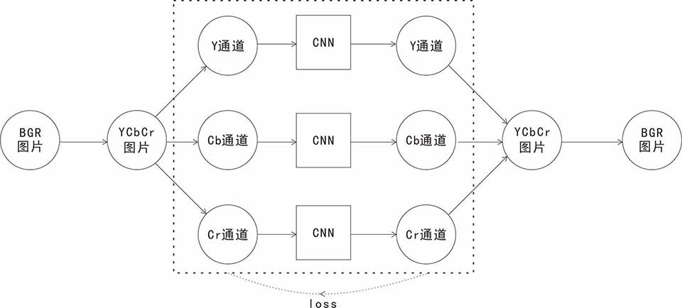

SRCNN超分辨率卷积神经网络笔记
图像超分辨率重建是通过低分辨率图像或图像序列恢复出高分辨率图像。SRCNN作为首个使用卷积神经网络（深度学习CNN结构），只使用三层卷积神经网络就实现端到端的超分辨率，获得较好的图像效果。
一. SRCNN的基本模型
（1）先将低分辨率图像使用双三次差值放大至目标尺寸（如放大至2倍、3倍、4倍），此时仍然称放大至目标尺寸后的图像为低分辨率图像(Low-resolution image)，即图中的输入(input)
（2）将低分辨率图像输入三层卷积神经网络，在原论文中卷积相关设置中，主要对YCrCb颜色空间中的Y通道进行重建，网络形式为(conv1+relu1)—(conv2+relu2)—(conv3+relu3)
（3）网络输出即是最终获得重建的高分辨率图像
图1.原文模型图
图2.只训练Y通道的模型图
Tensorflow卷积网络设置
第一层卷积：卷积核尺寸9×9(f1×f1)，卷积核数目64(n1)，输出64张特征图，步长为1，边框不补充
第二层卷积：卷积核尺寸1×1(f2×f2)，卷积核数目32(n2)，输出32张特征图，步长为1，边框不补充
第三层卷积：卷积核尺寸5×5(f3×f3)，卷积核数目1(n3)，输出1张特征图，步长为1，边框不补充
图3.Tensorflow CNN卷积网络模型图
二. 损失与优化
损失器采用MSE最小平方差损失函数
优化采用梯度下降法AdamOptimizer，学习率learning rate=0.001
三. 实现过程
A. 编写Tensorflow模型图
同图3，略......
B. 制作训练数据集
1.将原始图片分辨率压缩成原来的1/3倍，再双立方插值成原始分辨率，作为训练图片
2.将要训练图片和目标图片分割成一定的patch
3.原始图片与训练图片均只提取Y通道
4.存入h5py的数据集中
C. 训练
1.读取数据集
2.分块batch
3.运行tensorflow模型
4.模型的保存
D. 预测
1.将预测的图片双立方插值至目标分辨率
2.将预测的图片分割成固定大小的patch
3.导入tensorflow模型
4.输出值异端检测*
5.预测后的patch序列重新转换回图片
Ps：使用Tensorflow进行复现时，图像预处理时将像素点取值归一化至[0,1]，预测时，得到的最后一层特征图即重建结果直接乘以255再使用uint8转换时为0-255取值时会出现小问题，因此在乘以255前，须将负值设置为0，大于255的设置为255，再转换成uint8
四. 变种
变种一:训练RGB三通道
变种二:NO patch or HAVE patch
训练依旧采用分割patch处理
预测采用No patch
变种三:VALID or SAME
卷积层的padding选值问题
参考文献
[0] 源代码; xxx
[1] Image Super-Resolution Using Deep Convolutional Networks; http://mmlab.ie.cuhk.edu.hk/projects/SRCNN.html
[2] 基于深度卷积神经网络的图像超分辨率重建(SRCNN)学习笔记; https://blog.csdn.net/loadqian/article/details/80626438